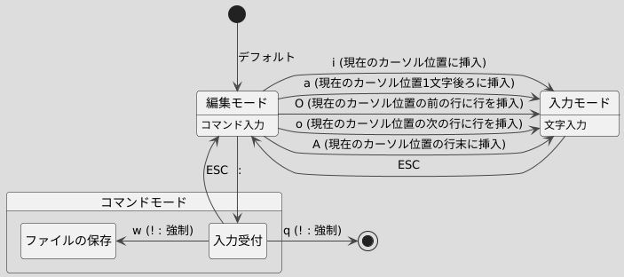

編集モード コマンド
カーソル移動
| コマンド | 説明 |
|---|---|
[文字数 (デフォルト : 1)]j (or ↓)
|
下に移動 |
[文字数 (デフォルト : 1)]k (or ↑)
|
上に移動 |
[文字数 (デフォルト : 1)]h (or ←)
|
左に移動 |
[文字数 (デフォルト : 1)]l (or →)
|
右に移動 |
w
|
次のスペース or 改行まで移動 |
b
|
前のスペース or 改行まで移動 |
gg
|
ファイルの先頭まで移動 |
G
|
ファイルの末尾行まで移動 |
0
|
行頭まで移動 |
$
|
行末へ移動 |
選択
| コマンド | 説明 |
|---|---|
v
|
一文字ずつ選択(↑↓←→で選択範囲拡大) |
V
|
一行ずつ選択(↑↓←→で選択範囲拡大) |
ESC
|
解除 |
コピーペースト等
| コマンド | 説明 |
|---|---|
[文字数 (デフォルト : 1)]x
|
現在のカーソル位置から [文字数] 分、文字を切り取り |
[文字数 (デフォルト : 1)]yl
|
現在のカーソル位置から [文字数] 分、文字をコピー |
[行数 (デフォルト : 1)]dd
|
現在のカーソル位置から [行数] 分、行を切り取り |
[行数 (デフォルト : 1)]yy
|
現在のカーソル位置から [行数] 分、行をコピー |
[回数 (デフォルト : 1)]p
|
現在のカーソル位置の次の位置(行の場合 : 次の行)から [回数] 分、切り取った文字を貼り付け |
[回数 (デフォルト : 1)]P
|
現在のカーソル位置(行の場合 : カーソルの行の先頭)から [回数] 分、切り取った文字を貼り付け |
Redo / Undo
| コマンド | 説明 |
|---|---|
u
|
Undo 直前の変更を元に戻す |
Ctrl + r
|
Redo |
検索
| コマンド | 説明 |
|---|---|
/[正規表現文字列]
|
[正規表現文字列]を上から下へ検索
|
n
|
次を検索 |
N
|
前を検索 |
置換
| コマンド | 説明 |
|---|---|
:%s;[置換前文字];[置換後文字列]
|
[置換前文字列]を[置換後文字列]に全て変更
|
:%s/[置換前文字列]/[置換後文字列]
|
[置換前文字列]を[置換後文字列]に全て変更
|